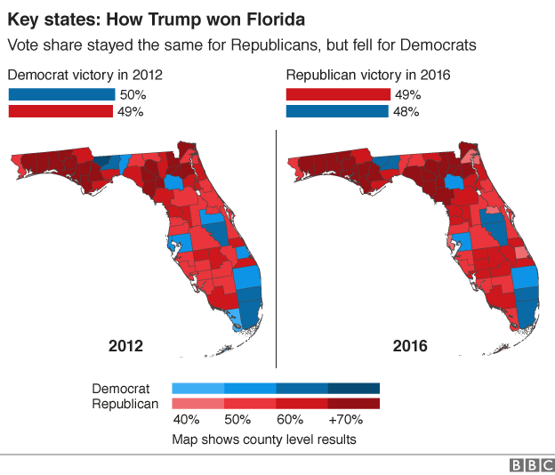
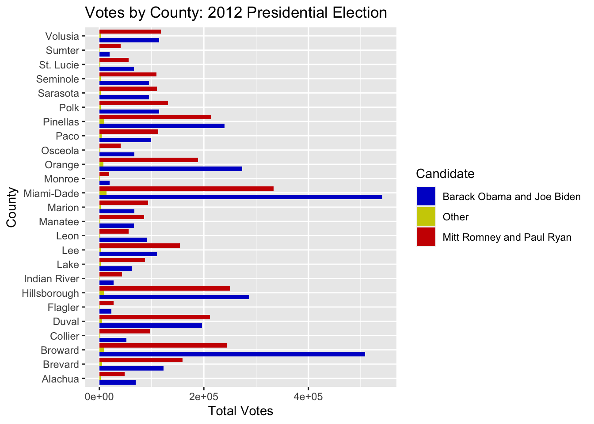
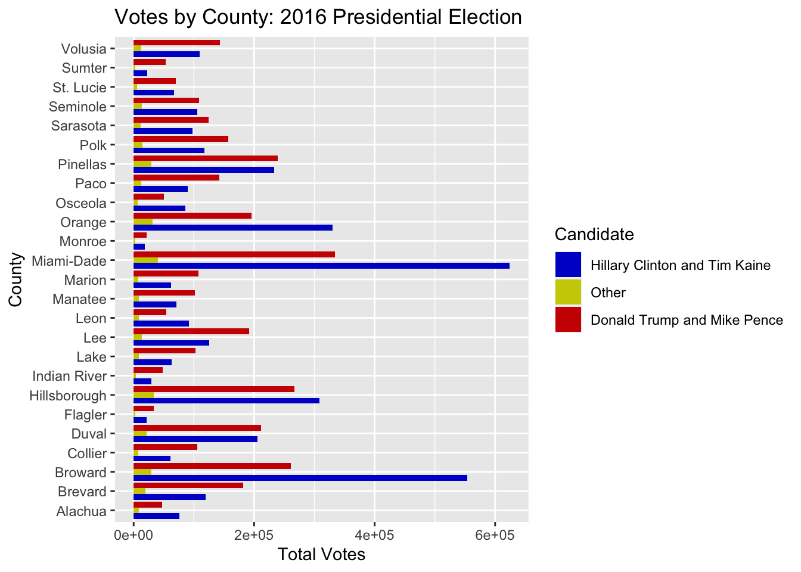
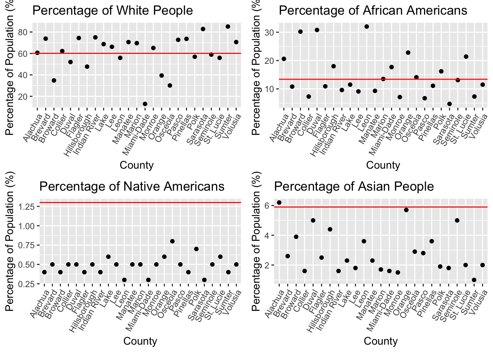
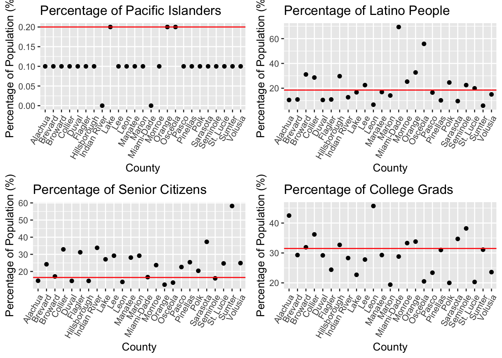

Data Analysis of Voting in Florida

Overview and Motivation
For over 200 years, our country has been based on a government of the people, by the people, and for the people. Voting for our leaders is a concept at the core of our democracy, and candidates cannot win election without appealing to a broad base of voters. Every four years, presidential candidates descend on the state of Florida to gain as many votes as possible in one of the nation’s largest swing states. Where to focus campaigning and who to target is often a difficult task for candidates and their campaigns. Florida is such a diverse state with many different demographics to pay attention to. Analyzing the behavior of voters in past elections can be vital in how candidates determine where they will focus their time and efforts. In this project, I analyzed two presidential elections, 2012 and 2016, in 25 of Florida’s most populous and pivotal counties in general elections. The 2012 Presidential Election saw a democratic incumbent, Barack Obama, going up against Republican challenger, and governor of Massashusetts, Mitt Romney. The 2016 election saw businessman Donald Trump go up against former secretary of state and first lady, Hillary Clinton. How these candidates appealed to voters in Florida in many ways determined their success in their elections.
Initial Questions
How do county demographics influence presidential elections? How does your race, age, economic standing, and education influence which candidate you will vote for? How much do individual condidates affect who people will vote for as opposed to their party affiliation? These are all questions I was seeking to answer through the course of this project. At first it was my intention to see how individual condidates influence party registration of voters, but I found actual votes to be a much more accurate depiction of how voters felt about candidates and their policies.
Data
I chose the Florida counties I would be analyzing by selecting the 20 most populous counties in the state (Palm Beach was ommitted because the data did not read in correctly) and six counties that are considered important or are “swing counties” that tend to flip between red and blue from one election to the next. These swing counties were Flagler County, Indian River County, Leon County, Monroe County, Pasco County, and Sumter County. I used Precinct level Election results from the Florida Division of Elections Website. I read in csv files of voting data of 25 counties from the 2016 and 2020 elections, and filtered only the votes cast for President to obtain the total votes. I then separated these votes into three categories: Republican, Democratic, and Other for each election year. For Demographics data, I obtained data on the demographics breakdown of each county from the Census website and read that into R as well.

Exploratory Analysis
I knew I wanted to display the voting results from each county on a bar graph to display the difference in voting, and the demographics data in a scatter plot to show the differences between each county. I realized that it would be important to not only show the total votes in each county but also the percentage of votes cast for each ticket, since the counties varied in their total populations. This is why I used the table as well. The percentage of votes for each candidate are displayed on the vizualizations in the analysis section as well. The following graphs and tables display the results of my exploratory data anlysis
Election Results by County

Percentage Vote Data
2012 Election


| County | REP % (Trump) | DEM % (Clinton) |
|---|---|---|
| Alachua | 40.28149 | 57.53591 |
| Brevard | 55.39983 | 42.77333 |
| Broward | 32.05895 | 66.75904 |
| Collier | 64.19858 | 34.38602 |
| Miami-Dade | 37.49647 | 60.97071 |
| Duval | 51.11844 | 47.52446 |
| Flagler | 53.05099 | 45.65072 |
| Hillsborough | 45.89440 | 52.54983 |
| Indian River | 60.79984 | 38.46972 |
| Lake | 57.66935 | 40.66392 |
| Lee | 57.54047 | 41.11548 |
| Leon | 37.44247 | 60.97677 |
| Manatee | 55.48018 | 43.08919 |
| Monroe | 48.93774 | 49.33975 |
| Marion | 57.21076 | 41.09339 |
| Orange | 40.10893 | 58.20282 |
| Osceola | 37.05611 | 61.38194 |
| Paco | 52.15167 | 45.58139 |
| Pinellas | 46.17903 | 51.77574 |
| Polk | 52.82286 | 46.01611 |
| Sarasota | 52.96827 | 45.59373 |
| Seminole | 52.74310 | 46.09661 |
| St. Lucie | 45.41576 | 53.22747 |
| Sumter | 66.87947 | 32.12505 |
| Volusia | 49.73859 | 48.57778 |
2016 Election


| County | REP % (Trump) | DEM % (Clinton) |
|---|---|---|
| Alachua | 35.75688 | 57.88714 |
| Brevard | 56.71637 | 37.32655 |
| Broward | 30.92690 | 65.57735 |
| Collier | 60.41433 | 35.00573 |
| Miami-Dade | 33.44656 | 62.50179 |
| Duval | 48.22323 | 46.86359 |
| Flagler | 57.96034 | 37.71446 |
| Hillsborough | 43.87411 | 50.61889 |
| Indian River | 60.05732 | 35.87504 |
| Lake | 58.98944 | 36.27411 |
| Lee | 58.09805 | 37.88501 |
| Leon | 34.71091 | 59.37764 |
| Manatee | 55.95846 | 39.09583 |
| Monroe | 50.52243 | 43.75735 |
| Marion | 60.86483 | 35.01817 |
| Orange | 35.10233 | 59.31916 |
| Osceola | 35.24947 | 59.88648 |
| Paco | 58.01225 | 36.80016 |
| Pinellas | 47.63897 | 46.54360 |
| Polk | 54.46123 | 40.62470 |
| Sarasota | 53.26604 | 41.89353 |
| Seminole | 47.77895 | 46.16153 |
| St. Lucie | 49.13356 | 46.75129 |
| Sumter | 67.76677 | 29.09357 |
| Volusia | 53.92380 | 41.13506 |
The demographics data of each county is desplayed in the scatter plots below. The red line indicates the national average.
